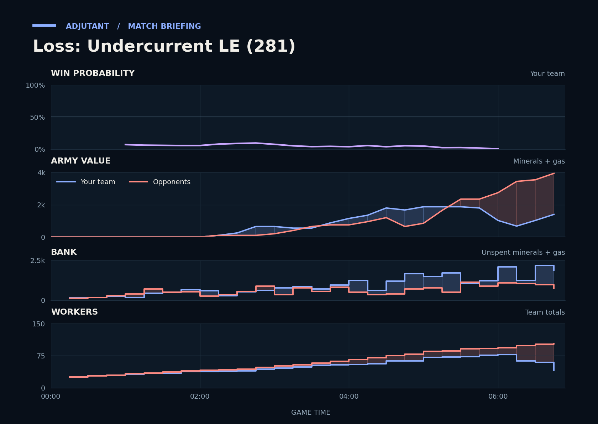

Loss: Undercurrent LE (281)
Provisional debrief. The full report (timeline, insights and analysis) is being generated.

**Loss.** You lost because from 6:24 the Terran's Hellions and Cyclones traded far better than your army, then killed workers across both your bases.
**Why**
- 6:24–6:53: The Terran's Hellions and Cyclones killed 32 SCVs and TakeTheTip's Drones while losing little army, ending with Scallop's gg.